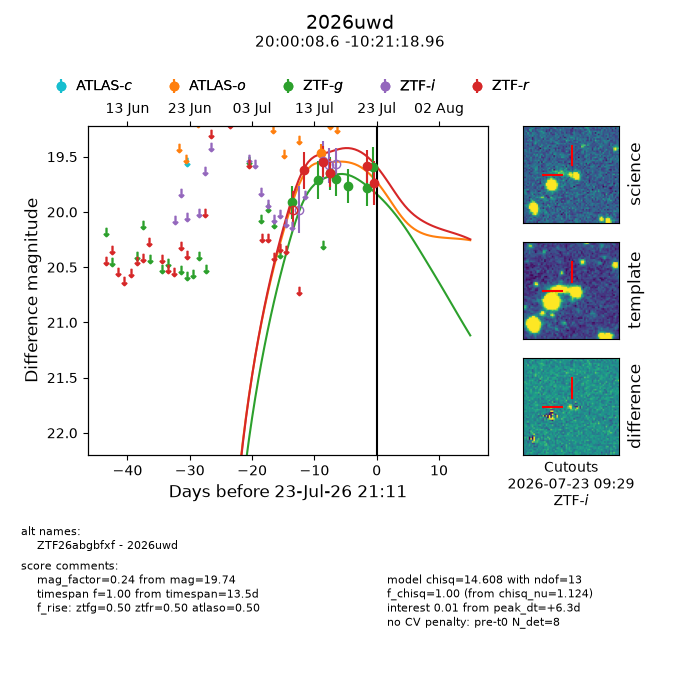
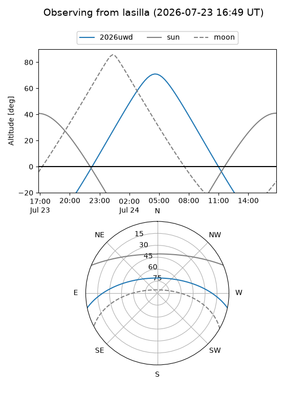
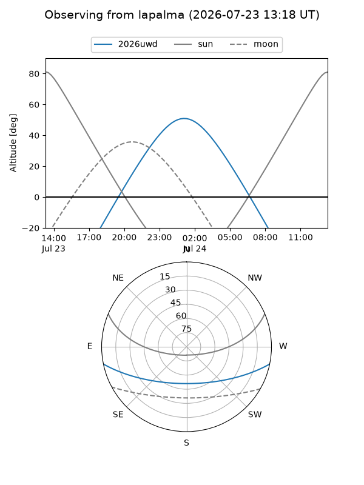
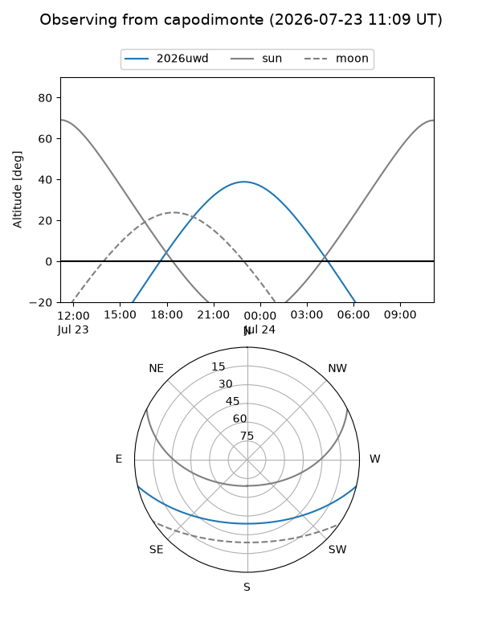
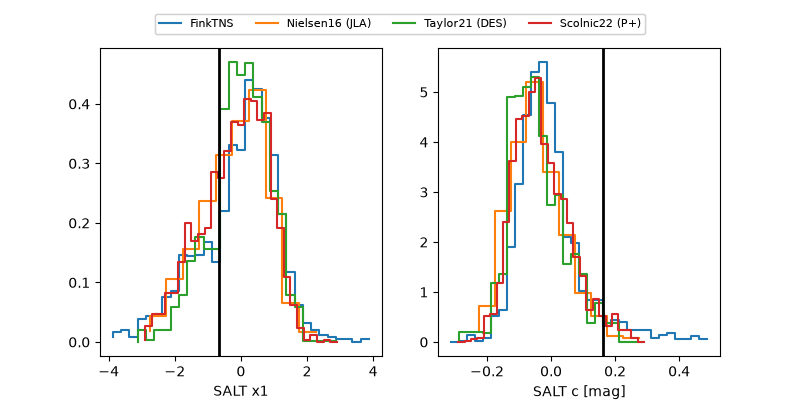

2026uwd
Target 2026uwd at 2026-07-23 21:14
Aliases and brokers:
FINK-ZTF: ztf.fink-portal.org/ZTF26abgbfxf
Lasair-ZTF: lasair-ztf.lsst.ac.uk/objects/ZTF26abgbfxf
ALeRCE-ZTF: alerce.online/object/ZTF26abgbfxf
YSE-PZ: ziggy.ucolick.org/yse/transient_detail/2026uwd
TNS name: wis-tns.org/object/2026uwd
Direct TNS query: direct search
alt names
ZTF26abgbfxf (ztf,fink_ztf)
2026uwd (tns,yse)
Coordinates:
equatorial (ra, dec) = 300.0360,-10.35527
equatorial (HMS+DMS) = 20:00:08.63,-10:21:18.96
galactic (l, b) = (31.2553,-19.90797)
Flags:
TNS type: nan
peak dt: +6.3
Photometry:
last atlaso=19.46, ztfg=19.59, ztfr=19.74
1 atlaso, 7 ztfg, 5 ztfr detections
Lightcurve

Visibility



Additional plots
